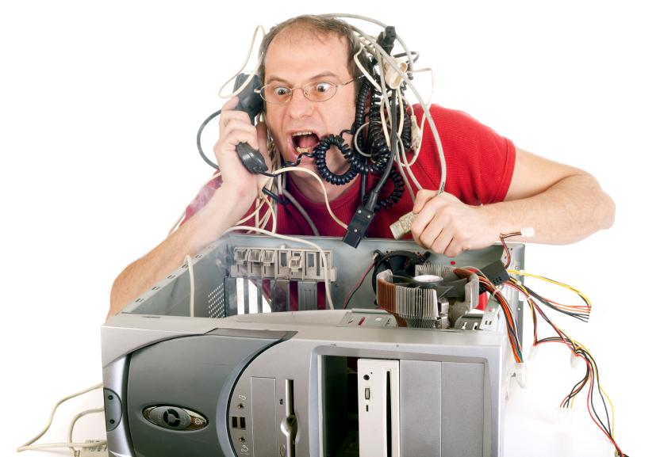

Mantenimiento preventivo y correctivo a equipos de cómputo.
"Optimización de PC, Laptop. Actualización de Sistemas Operativos Windows, Linux, MacOS. Virtualización de PC, y/o Laptop (VMWare, Virtual Box). Soporte Técnico en Sitio y Remoto.
El mantenimiento preventivo prolonga la vida útil y el buen funcionamiento de todos los equipos.
Debemos estar conscientes de que es una inversión necesaria; que los equipos con el tiempo
se deterioran y para prolongar su vida útil
y hacer más rentable su costo,es necesario darles un adecuado mantenimiento.
Limpieza de los componentes de Hardware del equipo.
Corrección de errores en el Sistema Operativo, borrado de archivos temporales, actualización de antivirus.
Desfragmentación del Disco Duro
.

Si no realizaste un mantenimiento preventivo para tu equipo, o fuiste víctima de gente sin capacidad que solo te cobraron
pero tu equipo
quedo igual o peor, no te preocupes nosotros podemos ayudarte con tu equipo,
deja que nuestro equipo
de colaboradores expertos y con un amplia experiencia te puedan brindar la mejor solución hecha a la medida de tus necesidades
al mejor precio.
No incluye Hardware requerido
No incluye respaldo de la información del equipo a reparar.
¿Tu PC y/o Laptop presenta lentitud?
¿Tu PC y/o Laptop tiene virus?
¿Tu PC y/o Laptop se apaga?
¿Tu PC y/o Laptop se reinicia?
Lo que necesitas es una optimización, nosotros contamos con una solución para cualquier problema que usted tenga
Mantenimiento a Equipo de Cómputo y Servidores
Preventivo
Correctivo
Diagnósticos
Instalaciones y configuraciones
Evaluación de equipo de cómputo para su reparación, escalamiento o reemplazo.
Reparación de Computadoras
Correctivo
Diagnósticos
Instalaciones y configuraciones
Evaluación de equipo de cómputo para su reparación, escalamiento o reemplazo.
Reparación de Computadoras

Ventas Tecnológicas
Equipo de cómputo de marca y ensamblados
Accesorios y consumibles de todas las marcas
Equipo para redes de voz y datos
Cableado estructurado
Reparación de Computadoras
Mantenimiento Preventivo General
Sistema
Eliminación de archivos temporales (internet, Programas y de Sistema).
Desinstalar programas innecesarios que afectan al rendimiento del Sistema Operativo.
Desactivar programas de inicio cuando se prende la computadora.
Utilida de Desfragmentación del Disco Duro.
Comprobar los errores en el disco duro.
Reparar los archivos del sistema.
TIPS
Como prevenir incidencias en Programas.
Como prevenir fallas en partes físicas.
LIMPIEZA
Sopleteado en todas sus partes electrónicas: Fuente de Poder, Procesador, DiscoDuro..
Limpieza con espuma limpiadora especial en: Gabinete, Unidad de CD, Floppy y otros.
Sistema Eliminación de archivos temporales (internet, Programas y de Sistema).
Desinstalar programas innecesarios que afectan al rendimiento del Sistema Operativo.
Desactivar programas de inicio cuando se prende la computadora.
Utilida de Desfragmentación del Disco Duro.
Comprobar los errores en el disco duro.
Reparar los archivos del sistema.
TIPS
Como prevenir incidencias en Programas.
Como prevenir fallas en partes físicas.
LIMPIEZA
Sopleteado en todas sus partes electrónicas: Fuente de Poder, Procesador, DiscoDuro..
Limpieza con espuma limpiadora especial en: Gabinete, Unidad de CD, Floppy y otros.
Sopleteado en todas sus partes electrónicas: Fuente de Poder, Procesador, DiscoDuro..
Limpieza con espuma limpiadora especial en: Gabinete, Unidad de CD, Floppy y otros.

RESPALDO
Información de Documentos.
Correo Electrónico (aplicaciones de mail).
Libreta de Direcciones en contactos (aplicaciones de mail).
Favoritos (sitios guardados).
Programas administrativos, fiscales o contables.
Ocio (Musica, Video e Imagenes).
TIPS
Como prevenir incidencias en Programas.
Como prevenir fallas en partes físicas.
SISTEMA
Reinstalación de Sistema Operativo.
Carga de aplicaciones administrativas.
Instalación de información respaldada.
INCLUYE DIAGSNOSTICO SOFTWARE Y HARDWARE.
Cotización para actualización en Procesador, Memoria, DiscoDuro y Unidades de CD o DVD.
Información de Documentos.
Correo Electrónico (aplicaciones de mail).
Libreta de Direcciones en contactos (aplicaciones de mail).
Favoritos (sitios guardados).
Programas administrativos, fiscales o contables.
Ocio (Musica, Video e Imagenes).
Como prevenir incidencias en Programas.
Como prevenir fallas en partes físicas.
SISTEMA
Reinstalación de Sistema Operativo.
Carga de aplicaciones administrativas.
Instalación de información respaldada.
INCLUYE DIAGSNOSTICO SOFTWARE Y HARDWARE.
Cotización para actualización en Procesador, Memoria, DiscoDuro y Unidades de CD o DVD.
Reinstalación de Sistema Operativo.
Carga de aplicaciones administrativas.
Instalación de información respaldada.